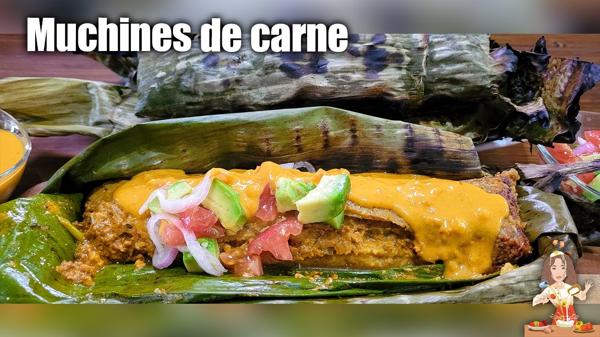
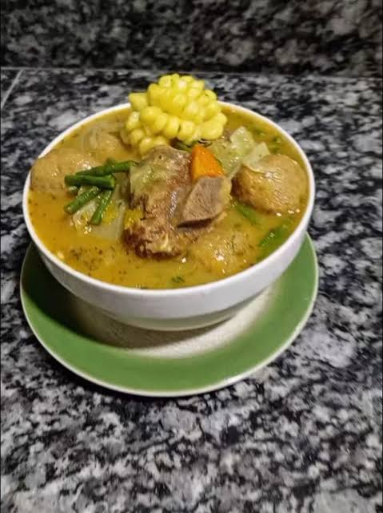
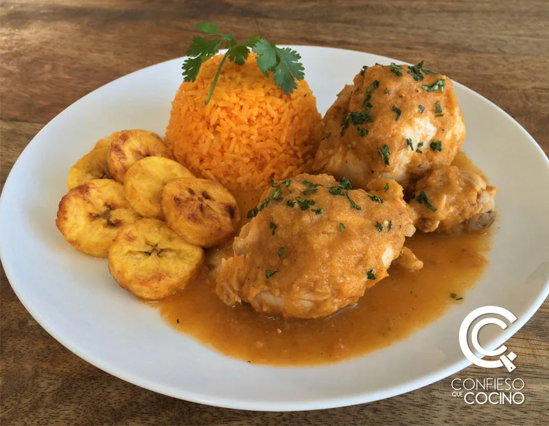
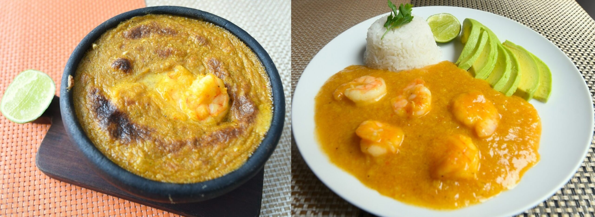
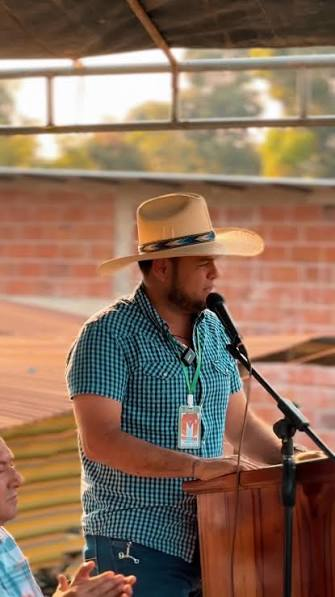

1. Descripción e historia del cantón
Vinces es uno de los cantones más antiguos de la provincia de Los Ríos. Se encuentra ubicado en la región Costa del Ecuador y es conocido popularmente como "París Chiquito".
Este sobrenombre se originó durante la época dorada del cacao, cuando algunas familias adineradas enviaban a sus hijos a estudiar a Francia. Al regresar, incorporaban nuevas costumbres, vestimentas y estilos arquitectónicos que dieron a la ciudad una influencia cultural francesa.
Vinces fue creado como cantón el 14 de junio de 1845. En sus primeros años perteneció a la antigua provincia del Guayas y, posteriormente, pasó a formar parte de la provincia de Los Ríos, creada en 1860.
Su historia está estrechamente relacionada con el cultivo y la comercialización del cacao, la navegación por el río Vinces y el desarrollo de las antiguas haciendas agrícolas.
2. Parroquias del cantón
Parroquia urbana
- Vinces (cabecera cantonal).
Parroquia rural
- Antonio Sotomayor, también conocida como Playas de Vinces.
Además, el cantón cuenta con diferentes recintos y comunidades rurales donde se desarrollan actividades agrícolas, ganaderas y comerciales.
3. Actividades económicas y gastronomía
La agricultura es una de las principales actividades económicas de Vinces. Históricamente, el cacao fue uno de los productos más importantes para el crecimiento económico del cantón.
Principales productos agrícolas
- Cacao.
- Banano.
- Arroz.
- Maíz.
- Plátano.
- Frutas tropicales.
También se desarrollan actividades de ganadería, pesca y comercio.
Gastronomía típica de Vinces
La gastronomía vinceña conserva recetas tradicionales de la cultura montuvia. Entre sus preparaciones características se encuentran:
- Muchín de verde.
- Caldo de bolita chispeada.
- Secos tradicionales.
- Cazuelas y sango.
- Platos a base de choclo.




4. Lugares turísticos
Malecón de Vinces
Es uno de los lugares más representativos de la ciudad. Está ubicado junto al río Vinces y permite disfrutar del paisaje, caminar y compartir en familia. Durante las noches es uno de los espacios de encuentro de los habitantes y visitantes.
Humedal Abras de Mantequilla
Es uno de los principales atractivos naturales de Vinces. Tiene una extensión aproximada de 22.500 hectáreas y fue declarado Humedal de Importancia Internacional por la Convención Ramsar en el año 2000.
Alberga una gran variedad de flora y fauna, especialmente aves, peces y otras especies propias de los humedales. Es un lugar apropiado para el turismo de naturaleza y la observación de aves.
Museo Histórico Cultural Los Chonos
Está ubicado en el recinto El Recuerdo, dentro del Humedal Abras de Mantequilla. Fue inaugurado el 26 de septiembre de 2025.
Su objetivo es conservar y difundir la historia, la arqueología y las tradiciones del territorio. En sus instalaciones se exhiben objetos arqueológicos, cerámicas, herramientas antiguas, fotografías y elementos relacionados con la cultura montuvia.
Río Vinces y sus playas de agua dulce
El río Vinces es uno de los principales símbolos naturales del cantón. Sus playas de arena gris reciben visitantes durante la temporada de verano. En 1968, Vinces fue declarado Primer Balneario de Agua Dulce del Ecuador.
Playas de Río Nuevo
Son espacios naturales que forman parte de los atractivos de agua dulce del cantón y permiten disfrutar de actividades recreativas y del paisaje.
Haciendas cacaoteras
Las antiguas haciendas representan una parte importante de la historia económica de Vinces. Algunas reciben visitantes para mostrar el cultivo, la cosecha y el proceso de producción del cacao y del banano.
Castillo Patrimonial de Vinces
Es una construcción de valor histórico y cultural que forma parte del patrimonio arquitectónico del cantón.
Regata Guayaquil - Vinces
Es una tradicional competencia de embarcaciones con motores fuera de borda que se realiza anualmente en marzo. Su recorrido conecta Guayaquil con Vinces y constituye una de las celebraciones deportivas más representativas del cantón.
5. Hoteles y hospedaje
Vinces ofrece opciones de hospedaje para las personas que visitan el cantón por turismo, actividades comerciales o motivos familiares.
También se pueden encontrar establecimientos cercanos a los espacios turísticos y al centro de la ciudad.
Consultar hoteles en Vinces6. Alcaldía del cantón
Alfonso Montalván Cerezo

La autoridad elegida para el período municipal 2023-2027.
Al momento de realizar esta consulta, el alcalde se encuentra con licencia temporal y la vicealcaldesa Daniela Sauhing Cervantes asumió la Alcaldía encargada.
7. Población
Según el Censo de Población y Vivienda 2022, el cantón Vinces registra 80.909 habitantes.
Aproximadamente el 61 por ciento de sus habitantes vive en el área rural. Una parte importante de la población se dedica a la agricultura, la ganadería, la pesca y el comercio.
8. Ubicación geográfica
Vinces está situado en la provincia de Los Ríos, en la región Costa del Ecuador. Su territorio se caracteriza por sus llanuras, ríos, humedales y tierras destinadas a la producción agrícola.
Entre sus límites se encuentran los cantones Palenque, Mocache, Ventanas, Baba y Pueblo Viejo, además de territorios de la provincia del Guayas.
Mapa del cantón Vinces
9. Fiestas y tradiciones
Vinces conserva costumbres tradicionales de la cultura montuvia. Sus celebraciones reflejan la identidad, la historia y la alegría de sus habitantes.
Rodeos montuvios
Son actividades tradicionales donde se muestran las habilidades de los jinetes y las costumbres del campo.
Regata Guayaquil - Vinces
Se realiza durante el mes de marzo y reúne a participantes y espectadores en una competencia fluvial de embarcaciones a motor.
Fiestas patronales
Las celebraciones religiosas y populares forman parte de las tradiciones del cantón y permiten fortalecer la convivencia de sus comunidades.
Gastronomía tradicional
La preparación de bollos, humitas, tamales, ayampacos y chocolate artesanal es parte de la identidad gastronómica vinceña.